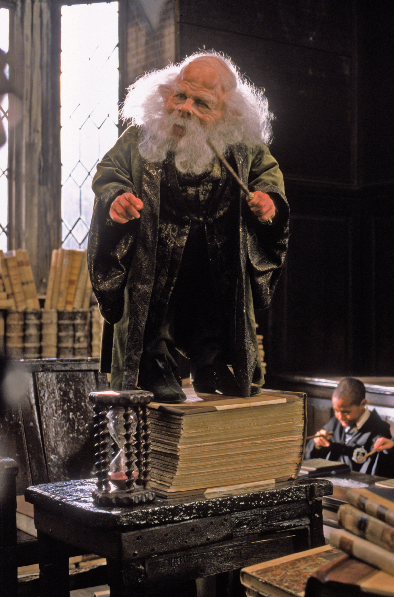

House Ravenclaw
House Ravenclaw, represented by the colors Blue and Bronze, with the eagle being their mascot. This is the house of Knowledge and learning. Founded by Rowena Ravenclaw, considered the most intelligent of the founders. The Sorting Hat sends those who value knowledge and learning above all else. Ravenclaw is known for having the highest average grades of all houses. The dorms are located in Ravenclaw Tower near the west side of Hogwarts.
People of House Ravenclaw
Ravenclaw has had many intelligent students through the years. Such as Ravenclaws local ghost, the Grey Lady. Ravenclaw is currently being headed by Professor Flitwick, who is known for his charm magic and for having been a professional duelist. In the past, Ravenclaw has had many genius students, such as Filius Flitwick and Gilderoy Lockhart. This is the house for those with vast amounts of Intellect. If you believe in learning as much as you can, Ravenclaw is your house.
